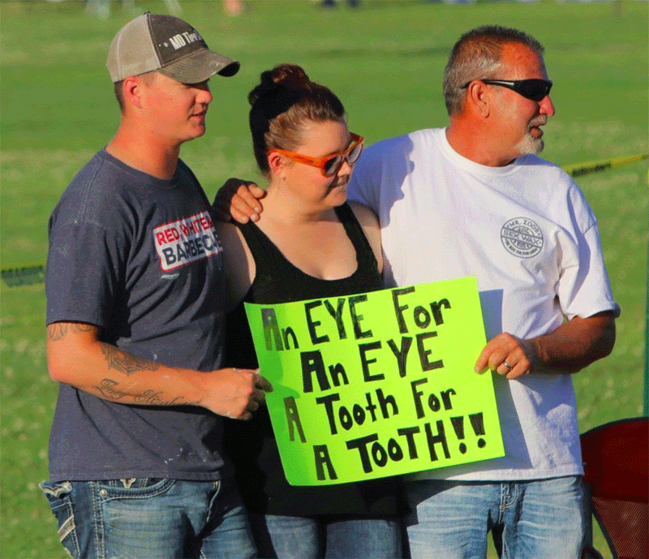

#1
October 2023
People are flooded with new information from multiple sources: internet, tv, own and others’ experiences, …
This seems like a good thing, right?
Well, not necessarily. It depends on how information is processed and interpreted.
We are going to see that:
Bayes’ rule
\[ Prob \left( A \mid B \right) = \frac{Prob \left( B \mid A \right) \times Prob \left( A \right)}{Prob \left( B \right)} \]
\(A\) and \(B\) are events.
\(Prob \left( A \right)\) and \(Prob \left( B \right)\) are the probabilities of observing \(A\) and \(B\).
\(Prob \left( A \mid B \right)\) and \(Prob \left( B \mid A \right)\) are the conditional probabilities of observing \(A\) given \(B\) and observing \(B\) given \(A\), respectively. That is, \(Prob \left( A \mid B \right)\) is the probability of \(A\) occurring given that \(B\) has occurred, while \(Prob \left( B \mid A \right)\) is the probability of \(B\) occurring given that \(A\) has occurred.
Question: What is the probability that I am 36 or older?
To answer (anonymously) you can either:
2212 612.Your answers will be displayed on the next slide.
Question: Given the new information you have received, what is the probability that I am 36 or older?
To answer (anonymously) you can either:
6925 086.Question: Given the new information you have received, what is the probability that I am 36 or older?
Was you answer zero?
If yes, then congrats! You have just updated your beliefs according to Bayes’ rule.
Now let’s do the math.
Any new information John receives is called a signal.
For example, if he reads a consumer review that recommends buying Sporty, then we say that he receives a “Sporty signal”.
Let \(\theta\) denote the probability that John puts on the signal being precise: \[ \begin{multlined} Prob \left( \text{Sporty signal} \mid \text{Sporty is better} \right) \\ = Prob \left( \text{Comfy signal} \mid \text{Comfy is better} \right) = \theta \end{multlined} \]
The parameter \(\theta\) captures things such as the trust John places in others’ opinions.
Overall probability of receiving a Sporty signal:
\[ \begin{split} Prob \left( \text{Sporty signal} \right) & = Prob \left( \text{signal precise} \right) \times Prob \left( \text{Sporty is better} \right) \\ & \phantom{aaa} + Prob \left( \text{signal imprecise} \right) \times Prob \left( \text{Comfy is better} \right) \\ & = \theta p + \left( 1 - \theta \right) \left(1 - p \right) \end{split} \]
Thus, by Bayes’ rule we obtain:
\[ \begin{multlined} Prob \left( \text{Sporty is better} \mid \text{ Sporty signal} \right) \\[4pt] \begin{aligned} \phantom{aa} & = \frac{Prob \left( \text{Sporty signal} \mid \text{Sporty is better} \right) \times Prob \left( \text{Sporty is better} \right)}{Prob \left( \text{Sporty signal} \right)} \\[1pt] \phantom{aa} & = \frac{\theta p}{\theta p + \left( 1 - \theta \right) \left(1 - p \right)} \end{aligned} \end{multlined} \]
Bayesian updating is what John should do if he wants decisions to be as rational as possible.
However, using Bayes’ rule is not always easy.
It is therefore not surprising that people commonly suffer from biases in how they interpret new information.
We are going to focus on two of such biases, known as confirmation bias and law of small numbers
Confirmation bias
The tendency of individuals to interpret new information in a way that confirms or supports their initial beliefs and opinions.
If John believes that Sporty is the best choice for him, then he may interpret this information as “Sporty manufacturers created a car with low fuel consumption and that is enjoyable to drive”.
This bias implies that John may be overconfident when making his choice.
Read the paper HERE
Half of the participants in each priming group (low-income vs. middle-class) were shown a video of the child answering questions. The other half were not shown this video.
The video was constructed to be inconsistent and uninformative about the child’s abilities:
| Treatment | Grade | ||
|---|---|---|---|
| Mathematics | Reading | Liberal arts | |
| Low-income & no video | 3.98 | 3.90 | 3.85 |
| Middle class & no video | 4.30 | 4.29 | 4.03 |
| Low-income & video | 3.79 | 3.71 | 3.04 |
| Middle class & video | 4.83 | 4.67 | 4.10 |
Participants in the low-income group rated the child’s ability to be lower than participants in the middle-class group.
How participants interpreted the same video depended on initial information about the child:

Read the paper HERE
Participants read:
Each subject was therefore presented with both prodeterrence and antideterrence information (in random order).
Overall, the evidence was intended to be inconclusive.
Example of prodeterrence information
Kroner and Phillips (1977) compared murder rates for the year before and the year after adoption of capital punishment in 14 states. In 11 of the 14 states, murder rates were lower after adoption of the death penalty. This research supports the deterrent effect of the death penalty. […]
Example of antideterrence information
Palmer and Crandall (1977) compared murder rates in 10 pairs of neighboring states with different capital punishment laws. In 8 of the 10 pairs, murder rates were higher in the state with capital punishment. This research opposes the deterrent effect of the death penalty. […]
Law of small numbers
The mistaken belief that small samples are representative of the population they are drawn from.
Imagine that John searches for new information by asking strangers on the street about their opinion on Sporty and Comfy.
Suppose that the first 4 respondents all give John a “Comfy signal”.
A sample of 4 respondents is way too small to be representative of the population!
Because of the law of small numbers, John may overinterpret this as due to differences in quality rather than chance.
Moreover, he may expect that the next signal will also be supportive of Comfy.
Gabler’s fallacy
The mistaken belief that if a random event occurred more frequently than normal during the past, then it is less likely to happen in the future (or vice versa).
It can occur when the probability of each outcome is known.
Hot hand bias
The overly optimistic belief that someone who has been successful in a task or activity is likely to be successful again in further attempts.
It can occur when there is uncertainty over the probability of each outcome.
Red Red Red Red Red Red
In 1913, at the Monte Carlo casino, the roulette ball stopped on Black 26 times in a row, causing gamblers to lose huge sums of money betting against what they thought to be a hot streak that could not possibly be sustained.
However, roulette spins are independent events: the past has no effect on what will happen in the future.
We know that each spin has a 50% chance of being Red and 50% chance of being Black (for simplicity, let’s ignore the Zero ).
Should we expect about 50% of spins to be Black?
Black Red Black Red
to be far more likely than the sequenceRed Red Red Red
Read the paper HERE
Gilovich, Vallone, and Tversky (1985) examined the shooting records of the Philadelphia 76ers during the 1980-81 season.
They also assessed players’ and basketball fans’ beliefs about sequential dependence between consecutive shots.
Read the paper HERE
| Probability of making a shot… | |||
|---|---|---|---|
| …if just missed one | … if just made one | ||
| What fans expected | 42% | 61% | |
| What players expected | 50% | 63% | |
| Estimates based on shooting records | 54% | 51% |
Filter bubble
A state of intellectual isolation that may result from algorithms feeding individuals with information that supports what they already believe and like, based on their past click-behaviour and search history.
One day John comes across this Facebook post.
Confirmation bias may cause John to interpret the post as evidence that vaccines are harmful. He may then give a like to the post without checking whether the news is fake or not.
Facebook’s algorithm will automatically show John more content shared by the post’s creator, and will suggest similar sponsored content in John’s feed.
Due to the law of small numbers, John may come to regard a relatively small sample of such posts as highly persuasive.
He may therefore become overconfident that the evidence against vaccines is overwhelming, when it is not.
Levy (2021) conducted an experiment to formally test the hypothesis that Facebook’s algorithm increases polarization by disproportionately exposing people to news matching their own opinions.
Read the paper HERE
Bursztyn et al. (2023) conducted an experiment with a sample of regular viewers of the two most popular cable news networks: MSNBC and Fox News.
Subjects were asked to provide their best guess about an objective statistic relating either to:
Read the paper HERE
Guesses were made in relation to a specific, randomly selected date in the last few years.
To inform their guess, respondents could choose one of four TV clips, which were all excerpted from shows broadcast on the same week as the date pertinent to their guess.
Incentive to learn objective facts: subjects were informed that if their guess was within 5% of the true value, they would win an Amazon gift card.
Question: Which information source did the majority of Fox News viewers choose? And what about MSNBC viewers?
To answer (anonymously) you can scan the QR code below or go to www.slido.com and enter the code 2722 155.
The results are relatively similar across all domains and reveal a substantial preference for opinion programs: roughly 75% of Fox News viewers and 60% of MSNBC viewers chose one of the two opinion shows.
For none of the five outcomes in either of the two populations did the $100 incentive significantly reduce the fraction choosing an opinion show.
Take-home message: People across the ideological spectrum turn to opinion programs over straight news…
…even when provided large incentives to learn objective facts!
People’s tendency to rely on opinion programs as sources of information has important consequences.
Bursztyn et al. (2023) examined the effect of diverging narratives between opinion programs in a high-stakes setting: the early stages of the COVID-19 pandemic in the US.
Result: viewers of different opinion programs significantly differ in their timing of adoption of preventative behaviour.
Both Fox News’ Hannity and Tucker Carlson Tonight have a right-wing slant.
However, Tucker Carlson Tonight emphasized the seriousness of the COVID threat as early as January 2020, while Hannity long ignored or downplayed it.
Bursztyn et al. (2023) surveyed a sample of Fox News viewers and found that…